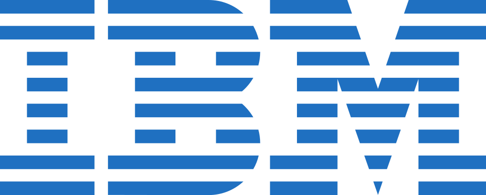

5 Empresas de software internacionales
En El Salvador, hay varias empresas internacionales que operan y tienen presencia en el país. Aquí te muestro cinco de ellas:
1- IBM El Salvador
IBM es una de las mayores empresas de tecnología a nivel mundial, y tiene presencia en El Salvador ofreciendo una amplia gama de servicios y soluciones de software, incluyendo inteligencia artificial, análisis de datos, seguridad informática, entre otros.

2- Microsoft El Salvador
Microsoft es otra empresa líder en tecnología a nivel global, y tiene presencia en El Salvador con soluciones de software como Microsoft Office, Azure (plataforma de servicios en la nube), Windows, entre otros.
3- Oracle El Salvador
Descripción: Kunnect es una empresa de software que ofrece soluciones en la nube para centros de contacto, incluyendo software de marcador predictivo y administración de llamadas.
4- SAP El Salvador
SAP es una empresa multinacional alemana que desarrolla software empresarial para la gestión de operaciones, recursos humanos, finanzas, entre otros. En El Salvador, SAP ofrece soluciones empresariales a diversas organizaciones.
5- Hewlett Packard Enterprise (HPE) El Salvador
HPE es una empresa global de tecnología que ofrece una amplia gama de soluciones de hardware y software para empresas. En El Salvador, HPE brinda servicios de infraestructura de TI, almacenamiento de datos, seguridad, y más.